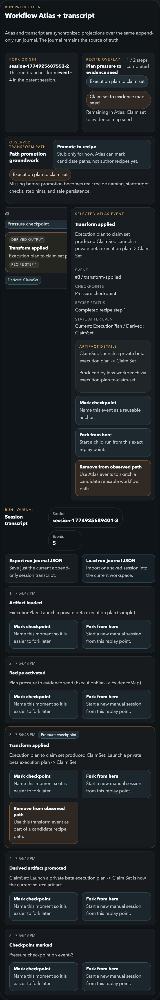

1. Rich run projection
Fork origin, recipe overlay, Atlas, and transcript now read as one coherent run view.

Run context up front
Fork origin and recipe overlay tell you what this run is and how far along the manual path it is.
One projection, not a hidden engine
Atlas and transcript are two views of the same append-only journal, kept visibly in sync.